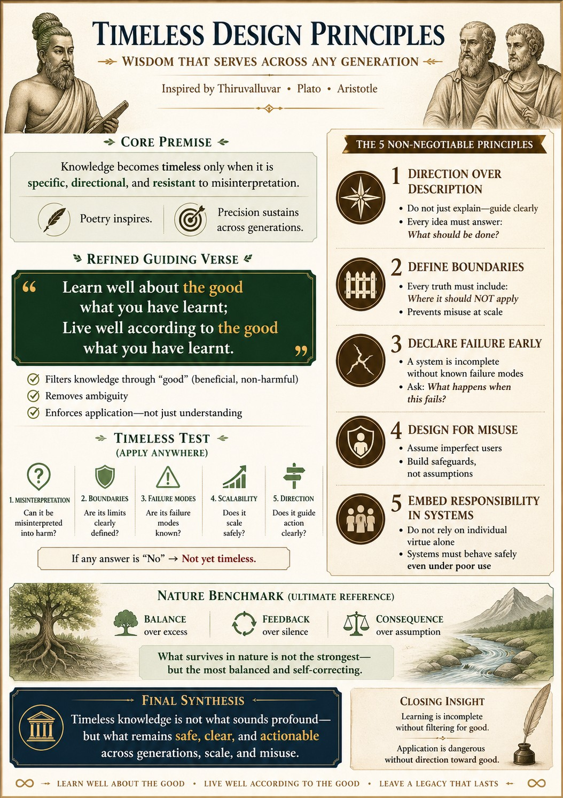

Visualizing the gap between knowledge and direction.
Embedded Direction (Not Just Expression)
Knowledge becomes timeless only when it is specific, directional, and resistant to misinterpretation. While poetry inspires, only precision sustains across generations.
The Principle
Every concept must clearly guide what should happen next. WE must avoid descriptive beauty that lacks functional direction.
Design Translation
- Systems must enforce or nudge toward intended outcomes.
- High-impact areas must leave no room for open-ended interpretation.
- Learning is incomplete without filtering for good; application is dangerous without direction toward good.
The Timeless Test
Before deploying an idea or system, WE ask:
"Can this be misinterpreted into harmful action?"
If the answer is "Yes," the design is incomplete.